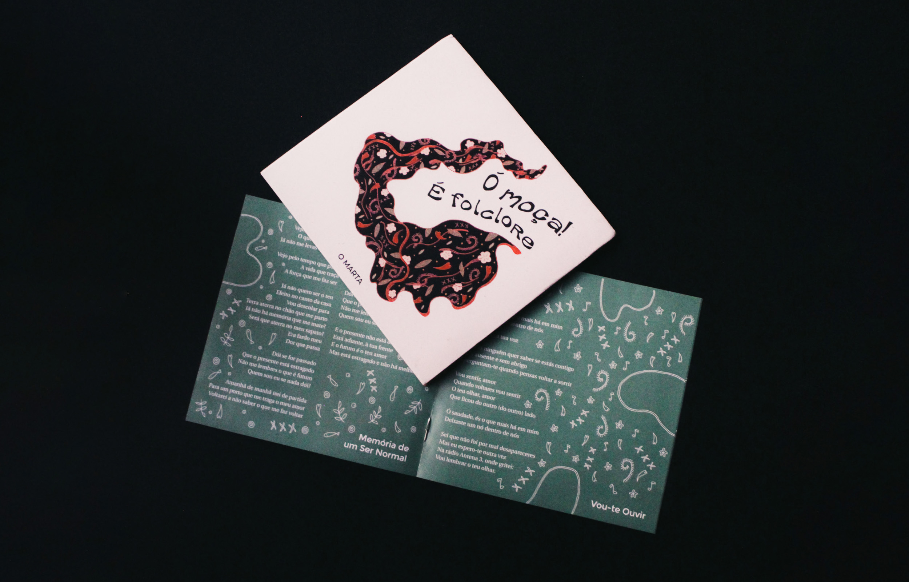

2023
INERTE
EDITORIAL, INSTALLATION
INERTE explores the concept of inertia, in and out of design. As a law of physics and social definition, inertia is what keeps us in motion or remaining still. This project was produced over an extensive research of how the practice of design can provoke personal and social change, which culminated in a essay issue. Consequently to the issue, the concept of my personal inertia was explored through the creation of an installation, combining several materials and plasticity.
This series was produced under my graduation project from Communication Design and it brings together my design and art practice in a rich combination of languages and gestures.


2022
Ó MOÇA! É FOLCLORE
COVER
O MARTA is a musical project by Guilherme Marta, that focuses on reviving traditions of Portuguese folklore through a contemporary and fresh approach. The cover of Ó MOÇA! É FOLCLORE takes a lot of inspiration in Portuguese folk, particularly clothing where the repetition of patterns and lines can become visual music.
2022
IPDJ
IDENTITY
This rebranding was made for the Portuguese Institute of Sports and Youth (IPDJ, Instituto Português do Desporto e Juventude) It focuses on bringing a modern, fresh and youthful visual identity that is easily adaptable into different formats. There is a playfulness in the modularity used to create the logo for the institution, versatile to various applications.
2022
(des)aleixo
EDITORIAL
developed with Carolina Magalhães and Francisca Miranda
The (des)aleixo collection tells the story of the, demolished, Bairro do Aleixo in Porto, Portugal.
The iconic, yet discriminated, five towers are represented in five publications. Here we tell what happened in Aleixo; the stigma created by the surrounding city; the social exclusion practiced by the metropolis, which only increased the precariousness. We approach Aleixo as a failed neighborhood, pre-destined to instability; we use the testimonies of the former population as a weapon; we refer to the destruction of the towers; and we write a manifesto. After all, Aleixo is the image of many other social neighborhoods...
"of the word, the propagation that would come to establish the stigmatization and prejudice from which the neighborhood would never manage to free itself."


2022
Senhora da Beira
IDENTITY, EDITORIAL
Concept book of the visual Identity of the territory Viseu, Portugal. Viseu is a city that belongs to the region Beira Alta, known for its sustainability, traditions and a high number of roundabouts. The identity revolves around circularity, community, history and patrimony.
2021
HYPOCHONDRIAC
ILLUSTRATION
During the major outburst of the pandemic surges the HYPOCHONDRIAC project. It consists of a leporello with seven gouache illustrations as well as a lettering cover. In times of uncertainty and global shutdown, hypochondria became a staple in a lot of homes during this period of crisis. Hypochondriasis or hypochondria is a condition in which a person is excessively and unduly worried about having a serious illness. As hypochondria is embedded in irrational thinking, the illustrations form abstract and inaccurate views of the human anatomy.